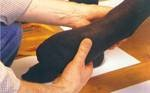

No existen dos pies que sean exactamente iguales. Por este motivo, a un zapatero solamente le es posible confeccionar zapatos cómodos de las medidas correspondientes cuando dispone de toda la información necesario sobre los dos pies del cliente. En la confección de un traje a medida, el sastre recomienda por lo menos dos o tres pruebas, mientras que el zapatero se las arregla con sólo una gracias al denominado zapato de prueba. Para ello es absolutamente necesario destinar suficiente tiempo a la toma de medidas, a ser posible de una a dos horas. Es muy frecuente que resulte difícil encontrar el momento en que puede conseguirse el resultado más preciso.
En condiciones normales, el tamaño que tiene el pie de un hombre saludable es constante a lo largo del día. Sin embargo, puede sufrir cambios causados por la temperatura (por ejemplo, si hace un calor considerable) o por el esfuerzo que haya realizado durante el transcurso del día (haber caminado o practicado deporte durante horas). Por esta razón, las horas más recomendables para realizar la toma de medidas del pie son las de la mañana.
Además algunas enfermedades provocan la hinchazón de los pies. Si el tratamiento debe terminar en un período previsible de tiempo, después del cual los pies recuperarán su forma original, el cliente debería esperar hasta ese momento para llevar a cabo la toma de medidas. En cambio, si se trata de una enfermedad crónica, los zapatos agrandados pueden aliviar el caminar del cliente.
En caso de malformaciones, como por ejemplo dedos en martillo o callosidades en los laterales, el zapatero afronta la confección de los zapatos de acuerdo con cada caso que se le presente. Sin embargo, es recomendable someterse a una pequeña operación ortopédica y a continuación encargar unos cómodos zapatos a medida.
En cualquier caso, es interesante asistir a una podóloga antes de la toma de las medidas para evitar molestias tales como uñeros, matrices hinchadas o dolorosos ojos de gallo. También es recomendable llevar medias finos para que las medidas resulten lo más exactas posibles.
La toma de medidas para confeccionar unos zapatos es una especie de ceremonia en la que el momento correcto, la duración, las eventuales molestias y toda la información que se pueda obtener sobre el cliente son de suma importancia. Las maniobras del zapatero siguen, por decirlo de algún modo, un ritual y un orden establecido. Dicha ceremonia se convierte en requisito básico para la construcción de una horma que sustituirá al pie con la máxima perfección durante la confección del zapato y que permitirá al zapatero crear una auténtica obra de arte.

El zapatero toma las medidas de la longitud, la anchura, la altura y el contorno del pie desde dos posiciones distintas: en primer lugar, mientras el pie aguanta el peso del cuero y, posteriormente, en estado relajado. Cuando la persona está de pie, la anchura del pie puede registrar una diferencia de casi un centímetro respecto a la posición sedente; además, el arco disminuye y los nervios y los músculos se tensan. Dicha posición refleja aproximadamente el estado en que se encuentra el pie cuando camina soportando una fuerte carga. De manera inevitable, el zapato se ensancha al caminar, asó como también a consecuencia del calor y de la humedad que produce el pie. Si el zapatero asumiera que las medidas de la posición de carga son las "reales", la alegría del cliente (los zapatos resultarían comodísimos desde el primer momento) se transformaría en decepción al transcurrir unos días: los zapatos se ensancharían demasiado y los arrastraría.
En las medidas que se toman mientras el cliente está sentado surge una imagen contraria: el pie es "más pequeño". A pesar de ello, un gran número de zapateros considera que dichas medidas son las más importantes, puesto que permiten calcular mejor la anchura cambiante del pie al caminar y la posible dilatación del zapato durante su utilización.
La primera fase de la toma de medidas consiste en la inspección del pie para poder determinar su forma: siguiendo un eje longitudinal imaginario se comprueba si el pie tiende hacia el exterior o hacia el interior, si el arco interior longitudinal es pronunciado o no, la situación del tobillo, si el talón es débil o fuerte, cómo son los laterales y el empeine o si existen deformidades características como por ejemplo, pie plano, metatarso acentuado, quinto dedo prominente, dedos en martillo o pulgar saliente. para ello es necesario palpar con precisión la forma y el contorno del pie. El zapatero observa la forma de caminar del cliente, que puede estar considerablemente influida por el peso corporal o por hábitos inconscientes. Hay personas que pisan con ligereza y otras que andan pesadamente. Por todos estos motivos, el zapatero estudia también los zapatos viejos y sus malformaciones muy atentamente (cómo y hacia qué lado se decanta el zapato, en qué punto se han gastado la suela y el talón), puesto que pueden proporcionar importantes indicaciones para la confección del nuevo zapato.
Finalmente, el zapatero habla con el cliente. En general, la mayoría de la gente no sabe cómo son sus pies, simplemente se queja de que "los zapatos le aprietan el pulgar", o de que "todos los zapatos son demasiado estrechos". De esta forma, surge información adicional importante para determinar el tamaño y la forma de los nuevos zapatos. Las personas que sufren diabetes o tienen mala circulación no pueden llevar zapatos estrechos, por lo que las medidas de su calzado deben ser algo más "holgadas".